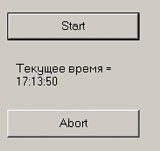
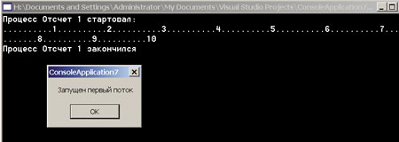
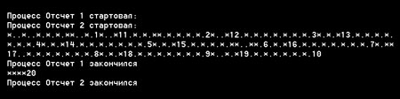
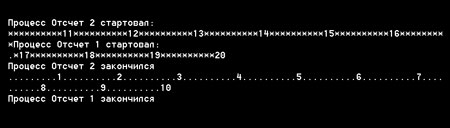

Андрей Колесов
Приступая к рассмотрению принципов создания многопоточных приложений для среды Microsoft .NET Framework, сразу оговоримся: хотя все примеры приведены на Visual Basic .NET, методика создания таких программ в целом одинакова для всех языков программирования, поддерживающих .NET, в том числе для C#. VB выбран для демонстрации технологии создания многопоточных приложений в первую очередь потому, что предыдущие версии этого инструмента такой возможности не предоставляли.
Осторожно: Visual Basic .NET тоже может делать ЭТО!
Как известно, Visual Basic (до версии 6.0 включительно) никогда ранее не позволял создавать многопоточные программные компоненты (EXE, ActiveX DLL и OCX). Тут нужно вспомнить, что архитектура COM включает три разные потоковые модели: однопоточную (Single Thread), совместную (Single Threaded Apartment, STA) и свободную (Multi-Threaded Apartment). VB 6.0 позволяет создавать программы первых двух типов. Вариант STA предусматривает псевдомногопоточный режим - несколько потоков действительно работают параллельно, но при этом программный код каждого из них защищен от доступа к нему извне (в частности, потоки не могут использовать общие ресурсы).
Visual Basic .NET теперь может реализовать свободную многопоточность в ее настоящем (native) варианте. Точнее сказать, в .NET такой режим поддерживается на уровне общих библиотек классов Class Library и среды исполнения Common Language Runtime. В результате VB.NET наравне с другими языками программирования .NET получил доступ к этим возможностям.
В свое время сообщество VB-разработчиков, выражая недовольство многими будущими новшествами этого языка, с большим одобрением отнеслось к известию о том, что с помощью новой версии инструмента можно будет создавать многопоточные программы (см. "В ожидании Visual Studio .NET", "BYTE/Россия" № 1/2001). Однако многие эксперты высказывали более сдержанные оценки по поводу этого новшества. Вот, например, мнение Дана Эпплмана (Dan Appleman), известного разработчика и автора многочисленных книг для VB-программистов: "Многопоточность в VB.NET страшит меня больше, чем все остальные новшества, причем, как и во многих новых технологиях .NET, это объясняется скорее человеческими, нежели технологическими факторами... Я боюсь многопоточности в VB.NET, потому что VB-программисты обычно не обладают опытом проектирования и отладки многопоточных приложений" [1].
Действительно, как и прочие средства низкоуровневого программирования (например, те же интерфейсы Win API), свободная многопоточность, с одной стороны, предоставляет более широкие возможности для создания высокопроизводительных масштабируемых решений, а с другой - предъявляет более высокие требования к квалификации разработчиков. Причем проблема тут усугубляется тем, что поиск ошибок в многопоточном приложении весьма сложен, так как они проявляются чаще всего случайным образом, в результате специфического пересечения параллельных вычислительных процессов (воспроизвести еще раз такую ситуацию зачастую бывает просто невозможно). Именно поэтому методы традиционной отладки программ в виде их повторного прогона в данном случае обычно не помогают. И единственный путь к безопасному применению многопоточности - это качественное проектирование приложения с соблюдением всех классических принципов "правильного программирования".
Проблема же с VB-программистами заключается еще и в том, что хотя многие из них - достаточно опытные профессионалы и отлично знают о подводных камнях многопоточности, использование VB6 могло притупить их бдительность. Ведь, обвиняя VB в ограниченности, мы порой забываем, что многие ограничения определялись улучшенными средствами безопасности этого инструмента, которые предупреждают или исключают ошибки разработчика. Например, VB6 автоматически создает отдельную копию всех глобальных переменных для каждого потока, предупреждая таким образом возможные конфликты между ними. В VB.NET подобные проблемы полностью перекладываются на плечи программиста. При этом следует также помнить, что применение многопоточной модели вместо однопоточной далеко не всегда приводит к повышению производительности программы, производительность может даже снизиться (даже в многопроцессорных системах!).
Однако все сказанное выше не нужно рассматривать как совет не связываться с многопоточностью. Просто нужно хорошо представлять, когда такие режимы стоит применять, и понимать, что более мощное средство разработки всегда предъявляет более высокие требования к квалификации программиста.
Параллельная обработка в VB6
Конечно, организовать псевдопараллельную обработку данных можно было и с помощью VB6, но возможности эти были весьма ограниченными. Например, мне несколько лет назад понадобилось написать процедуру, которая приостанавливает выполнение программы на указанное число секунд (соответствующий оператор SLEEP в готовом виде присутствовал в Microsoft Basic/DOS). Ее нетрудно реализовать самостоятельно в виде следующей простой подпрограммы:
Sub SleepVB (Seconds) ' ожидание Seconds секунд Dim Start Start = Timer 'текущее время в секундах Do While Timer < Start + Seconds ' обеспечение параллельности 'DoEvents Loop End Sub |
В ее работоспособности можно легко убедиться, например, с помощью такого кода обработки щелчка кнопки на форме:
Private Sub Command1_Click()
Call SleepVB(5)
MsgBox "Привет!"
End Sub
|
Но проблема тут заключается в том, что в момент выполнения процедуры SleepVB все события данного приложения заблокированы (точнее, они не могут получить управление, так как SleepVB занимает все процессорное время). То есть не срабатывает, например, вторая кнопка на форме:
Private Sub Command2_Click() MsgBox "Еще один привет!" End Sub |
Чтобы решить эту проблему в VB6, внутри цикла Do...Loop процедуры SleepVB нужно снять комментарий с обращения к функции DoEvents, которая передает управление операционной системе и возвращает число открытых форм в данном VB-приложении. Но обратите внимание, что вывод окна с сообщением "Еще один привет!", в свою очередь, блокирует выполнение всего приложения, в том числе и процедуры SleepVB.
Используя глобальные переменные в качестве флагов, можно обеспечить также аварийное завершение запущенной процедуры SleepVB. Она, в свою очередь, представляет собой простейший пример вычислительного процесса, полностью занимающего ресурсы процессора. Но если вы будете совершать какие-то полезные вычисления (а не крутиться в пустом цикле), то нужно иметь в виду, что обращение к функции DoEvent занимает довольно много времени, поэтому это нужно делать через достаточно большие интервалы времени.
Чтобы увидеть ограниченность поддержки параллельных вычислений в VB6, замените обращение к функции DoEvents на вывод метки:
Label1.Caption = Timer
В этом случае не только не будет срабатывать кнопка Command2, но даже в течение 5 с не будет изменяться содержание метки.
Для проведения еще одного эксперимента добавьте вызов ожидания в код для Command2 (это можно сделать, так как процедура SleepVB реентерабельна):
Private Sub Command2_Click() Call SleepVB(5) MsgBox "Еще один привет!" End Sub |
Далее запустите приложение и щелкните Command1, а спустя 2-3 с - Command2. Первым появится сообщение "Еще один привет"!, хотя соответствующий процесс был запущен позднее. Причина этого в том, что функция DoEvents проверяет только события визуальных элементов, но не наличие других вычислительных потоков. Более того, VB-приложение фактически работает в одном потоке, поэтому управление вернулось в событийную процедуру, которая была запущена последней.
Управление потоками в .NET
Построение многопоточных .NET-приложений основывается на использовании группы базовых классов .NET Framework, описываемых пространством имен System.Threading. При этом ключевая роль принадлежит классу Thread, с помощью которого выполняются практически все операции по управлению потоками. С этого места все сказанное о работе с потоками относится ко всем средствам программирования в .NET, в том числе к C#.
Для первого знакомства с созданием параллельных потоков создадим Windows-приложение с формой, на которой разместим кнопки ButtonStart и ButtonAbort и напишем следующий код:
Imports System.Threading
Imports VB = Microsoft.VisualBasic
Public Class Form1
Inherits System.Windows.Forms.Form
Dim Thread1 As Thread
#Region "Код, который пишем мы сами"
Private Sub SleepVBNET()
Dim Seconds As Integer = 10
' процедура ожидания 10 сек
Dim Start As Integer
Start = VB.Timer
' ожидание в цикле
Do While VB.Timer < Start + Seconds
' Label1.Text = _
' "Текущее время = " & VB.TimeOfDay
Loop
' Label1.Text = "Процесс завершен"
End Sub
Private Sub ButtonStart_Click _
(ByVal sender As System.Object, _
ByVal e As System.EventArgs) _
Handles ButtonStart.Click
' запуск параллельного потока
Thread1 = _
New Thread(AddressOf SleepVBNET)
Thread1.Start()
End Sub
Private Sub ButtonAbort_Click …
' аварийное завершение потока
Thread1.Abort()
End Sub
#End Region
End Class
|
Сразу же хотелось бы обратить внимание на три момента. Во-первых, ключевые слова Imports используются для обращения к сокращенным именам классов, описанных здесь пространством имен. Я специально привел еще один вариант применения Imports для описания сокращенного эквивалента длинного названия пространства имен (VB = Microsoft.VisualBasic), который можно применить к тексту программы. В этом случае сразу видно, к какому пространству имен относится объект Timer.
Во-вторых, я использовал логические скобки #Region, чтобы наглядно отделить код, написанный мной, от кода, формируемого дизайнером форм автоматически (последний здесь не приводится).
В-третьих, описания входных параметров событийных процедур специально убраны (так будет делаться иногда и далее), чтобы не отвлекаться на вещи, которые в данном случае не важны.
Запустите приложение и щелкните кнопку ButtonStart. Запустился процесс ожидания в цикле заданного интервала времени, причем в данном случае (в отличие от примера с VB6) - в независимом потоке. В этом легко убедиться - все визуальные элементы формы являются доступными. Например, нажав кнопку ButtonAbort, можно аварийно завершить процесс с помощью метода Abort (но закрытие формы с помощью системной кнопки Close не прервет выполнение процедуры!). Для наглядности динамики процесса вы можете разместить на форме метку, а в цикл ожидания процедуры SleepVBNET добавить вывод текущего времени:
Label1.Text = _ "Текущее время = " & VB.TimeOfDay
Выполнение процедуры SleepVBNET (которая в данном случае уже представляет собой метод нового объекта) будет продолжаться, даже если вы добавите в код ButtonStart вывод окна сообщения о начале вычислений после запуска потока (рис. 1).
|  | Рис. 1. Простейший вариант реализации многопоточного .NET-приложения.
|
Более сложный вариант - поток в виде класса
Для проведения дальнейших экспериментов с потоками создадим новое VB-приложение типа Console, состоящее из обычного модуля кода с процедурой Main (которая начинает выполняться при запуске приложения) и модуля класса WorkerThreadClass:
Imports System.Threading
Module Module1
Sub Main()
Dim Thread1 As Thread
Dim oWorker As New WorkerThreadClass()
Thread1 = New Thread(AddressOf _
oWorker.WorkerThread)
' передаем исходные данные:
oWorker.Start = 1
oWorker.Finish = 10
oWorker.ThreadName = "Отсчет 1"
oWorker.SymThread = "."
Thread1.Start()
MsgBox("Запущен первый поток")
End Sub
End Module
Public Class WorkerThreadClass
Public Start As Integer
Public Finish As Integer
Public ThreadName As String
Public SymThread As String
Public Sub WorkerThread()
' метод класса, который
' запускается в виде потока
Dim i, j As Integer
Dim a As Double
Console.WriteLine("Процесс " _
& ThreadName & "стартовал:")
For i = Start To Finish
For j = 1 To 10000000
'имитация вычислений
a = 1.23 ^ 2
a = a * a * 1.2345
If j Mod 1000000 = 0 Then
Console.Write(".")
End If
Next
Console.Write(i)
Next
Console.WriteLine("")
Console.WriteLine("Процесс " & ThreadName & "закончился")
End Sub
End Class
|
Запустим созданное приложение. Появится консольное окно, в котором будет видна бегущая строка символов, демонстрирующая модель запущенного вычислительного процесса (WorkerThread). Потом появится окно сообщения, выданного вызывающим процессом (Main), и в завершение мы увидим картинку, изображенную на рис. 2 (если вас не устраивает скорость выполнения моделируемого процесса, то уберите или добавьте какие-нибудь арифметические операции с переменной "а" в процедуре WorkerThread).
|  |
| Рис. 2. Параллельное выполнение потоков в консольном приложении.
|
Обратите внимание: окно сообщения "Запущен первый поток" было выдано на экран с заметной задержкой, после старта процесса WorkerThread (в случае с формой, описанном в предыдущем пункте, такое сообщение появилось бы почти мгновенно после нажатия кнопки ButtonStart). Скорее всего, это происходит потому, что при работе с формой событийные процедуры имеют более высокий приоритет по сравнению с запускаемым процессом. В случае же консольного приложения все процедуры имеют одинаковый приоритет. Вопрос приоритетов мы обсудим позднее, а пока установим для вызывающего потока (Main) самый высокий приоритет:
Thread.CurrentThread.Priority = _ ThreadPriority.Highest Thread1.Start() |
Теперь окно появляется почти сразу. Как видим, создавать экземпляры объекта Thread можно двумя способами. Сначала мы применяли первый из них - создали новый объект (поток) Thread1 и работали с ним. Второй вариант - получить объект Thread для выполняемого в данный момент потока с помощью статического метода CurrentThread. Именно таким образом процедура Main сама для себя установила более высокий приоритет, но могла она это сделать и для любого другого потока, например:
Thread1.Priority = ThreadPriority.Lowest Thread1.Start()
Чтобы показать возможности управления запущенным процессом, добавим в конце процедуры Main такие строчки кода:
Thread1.Start()
MsgBox("Первый поток запущен")
' задержка данного процесса на 3 секунды
Thread.CurrentThread.Sleep(2000)
Thread1.Suspend() ' приостановили другой
MsgBox("Поток приостановлен")
Thread1.Resume() ' продолжили выполнение
|
Теперь запустите приложение, одновременно выполняя некоторые операции с мышью (надеюсь, вы выбрали нужный уровень задержки в WorkerThread, чтобы процесс был не очень быстрым, но и не слишком медленным).
Сначала в консольном окне начнется "Процесс 1", и появится сообщение "Первый поток запущен". "Процесс 1" выполняется, а вы быстренько нажмите кнопку ОК в окне сообщения.
Далее - "Процесс 1" продолжается, но через две секунды появляется сообщение "Поток приостановлен". "Процесс 1" замер. Нажмите кнопку "ОК" в окне сообщения: "Процесс 1" продолжил свое выполнение и успешно завершил его.
В этом фрагменте мы использовали метод Sleep для приостановки текущего процесса. Заметьте: Sleep является статическим методом и может применяться только к текущему процессу, но не к какому-то экземпляру объекта Thread. Синтаксис языка позволяет написать Thread1.Sleep или Thread.Sleep, но все равно в этом случае используется объект CurrentThread.
Метод Sleep может также использовать аргумент 0. В этом случае текущий поток освободит неиспользованный остаток кванта выделенного для него времени.
Еще один интересный вариант использования Sleep - со значением Timeout.Infinite. В этом случае поток будет приостановлен на неопределенный срок, пока это состояние не будет прервано другим потоком с помощью метода Thread.Interrupt.
Чтобы приостановить внешний поток из другого потока без остановки последнего, нужно использовать вызов метода Thread.Suspend. Тогда продолжить его выполнение можно будет методом Thread.Resume, что мы и сделали в приведенном выше коде.
Немного о синхронизации потоков
Синхронизация потоков - это одна из главных задач при написании многопоточных приложений, и в пространстве System.Threading имеется большой набор средств для ее решения. Но сейчас мы познакомимся только с методом Thread.Join, который позволяет отлеживать окончание выполнение потока. Чтобы увидеть, как он работает, замените последние строки процедуры Main на такой код:
Thread1.Start()
Thread1.Join()
MsgBox("Первый поток завершен")
|
Запустите приложение - окно сообщения появится только после завершения контролируемого процесса. Можно вызывать метод Join с аргументом, чтобы задать время ожидания. При этом управление вернется после завершения потока (со значением функции True) или истечения тайм-аута (False). Вы можете сами убедиться в этом, написав такой код и меняя время тайм-аута для разных запусков приложения:
Thread1.Start()
If Thread1.Join(2000) Then
MsgBox("Поток завершен")
Else
MsgBox("Истек тайм-аут")
End If
|
Управление приоритетами процессов
Распределение квантов времени процессора между потоками выполняется с помощью приоритетов, которые задаются в виде свойства Thread.Priority. Для потоков, создаваемых в период выполнения, можно устанавливать пять значений: Highest, AboveNormal, Normal (используется по умолчанию), BelowNormal и Lowest. Чтобы посмотреть, как влияют приоритеты на скорость выполнения потоков, напишем такой код для процедуры Main:
Sub Main()
' описание первого процесса
Dim Thread1 As Thread
Dim oWorker1 As New WorkerThreadClass()
Thread1 = New Thread(AddressOf _
oWorker1.WorkerThread)
' Thread1.Priority = _
' ThreadPriority.BelowNormal
' передаем исходные данные:
oWorker1.Start = 1
oWorker1.Finish = 10
oWorker1.ThreadName = "Отсчет 1"
oWorker1.SymThread = "."
' описание второго процесса
Dim Thread2 As Thread
Dim oWorker2 As New WorkerThreadClass()
Thread2 = New Thread(AddressOf _
oWorker2.WorkerThread)
' передаем исходные данные:
oWorker2.Start = 11
oWorker2.Finish = 20
oWorker2.ThreadName = "Отсчет 2"
oWorker2.SymThread = "*"
'
' запускаем наперегонки
Thread.CurrentThread.Priority = _
ThreadPriority.Highest
Thread1.Start()
Thread2.Start()
' Ждем завершения процессов
Thread1.Join()
Thread2.Join()
MsgBox("Оба процесса завершились")
End Sub
|
Обратите внимание, что здесь используется один класс для создания нескольких потоков. Запустим приложение и посмотрим на динамику выполнения двух потоков (рис. 3). Тут видно, что в целом они выполняются с одинаковой скоростью, первый немного впереди за счет более раннего запуска.
|  |
| Рис. 3. Динамика выполнения двух потоков с равными приоритетами.
|
Теперь перед запуском первого потока установим для него приоритет на один уровень ниже:
Thread1.Priority = _ ThreadPriority.BelowNormal
Картина резко поменялась: второй поток практически полностью отнял все время у первого (рис. 4).
Отметим также использование метода Join. С его помощью мы выполняем довольно часто встречающийся вариант синхронизации потоков, при котором главная программа ждет завершения выполнения нескольких параллельных вычислительных процессов.
|  |
| Рис. 4. Поток 2 был запущен позднее, но с более высоким приоритетом.
|
Заключение
Мы лишь затронули основы разработки многопоточных .NET-приложений. Один из наиболее сложных и на практике актуальных вопросов - это синхронизация потоков. Кроме применения описанного в этой статье объекта Thread (у него есть много методов и свойств, которые мы не рассматривали здесь), очень важную роль в управлении потоками играют классы Monitor и Mutex, а также операторы lock (C#) и SyncLock (VB.NET).
Более подробное описание этой технологии приведено в отдельных главах книг [1] и [2], из которых мне хотелось бы привести несколько цитат (с которыми я полностью согласен) в качестве очень краткого подведения итогов по теме "Многопоточность в .NET".
"Если вы новичок, для вас может быть неожиданностью обнаружить, что издержки, связанные с созданием и диспетчеризацией потоков, могут привести к тому, что однопоточное приложение работает быстрее... Поэтому всегда старайтесь протестировать оба прототипа программы - однопоточный и многопоточный" [2].
"Вы должны тщательно подходить к проектированию многопоточности и жестко управлять доступом к общим объектам и переменным" [1].
"Не следует рассматривать применение многопоточности как подход по умолчанию" [2].
"Я спросил аудиторию, состоящую из опытных VB-программистов, хотя ли они получить свободную многопоточность будущей версии VB. Практически все подняли руки. Затем я спросил, кто знает, на что он идет при этом. На этот раз руки подняли всего несколько человек, и на их лицах были понимающие улыбки" [1].
"Если вас не устрашили трудности, связанные с проектированием многопоточных приложений, при правильном применении многопоточность способна значительно улучшить быстродействие приложения" [1].
От себя добавлю, что технология создания многопоточных .NET-приложений (как и многие другие технологии .NET) в целом практически не зависит от используемого языка. Поэтому я советую разработчикам изучать разные книги и статьи, независимо от того, какой язык программирования выбран в них для демонстрации той или иной технологии.
Литература:
- Дан Эпплман. Переход на VB.NET: стратегии, концепции, код/Пер. с англ. - СПб.: "Питер", 2002, - 464 с.: ил.
- Том Арчер. Основы C#. Новейшие технологии/Пер. с англ. - М.: Издательско-торговый дом "Русская Редакция", 2001. - 448 с.: ил.
Многозадачность и многопоточностьНачнем с такого простого утверждения: 32-разрядные операционные системы Windows поддерживают многозадачные (многопроцессные) и многопоточные режимы обработки данных. Можно обсуждать, насколько хорошо они это делают, но это уже другой вопрос. Многозадачность - это режим работы, когда компьютер может выполнять несколько задач одновременно, параллельно. Понятно, что если компьютер имеет один процессор, то речь идет о псевдопараллельности, когда ОС по некоторым правилам может выполнять быстрое переключение между различными задачами. Задача - это программа или часть программы (приложения), выполняющая некоторое логическое действие и являющаяся единицей, для которой ОС выделяет ресурсы. Несколько в упрощенном виде можно считать, что в Windows задачей является каждый программный компонент, реализованный в виде отдельного исполняемого модуля (EXE, DLL). Для Windows понятие "задача" имеет тот же смысл, что и "процесс", что, в частности, означает выполнение программного кода строго в отведенном для него адресном пространстве. Имеется два основных вида многозадачности - совместная (cooperative) и вытесняющая (preemptive). Первый вариант, реализованный в ранних версиях Windows, предусматривает переключение между задачами только в момент обращения активной задачи к ОС (например, для ввода-вывода). При этом каждый поток отвечает за возврат управления ОС. Если же задача забывала делать такую операцию (например, зацикливалась), то довольно часто это приводило к зависанию всего компьютера. Вытесняющая многозадачность - режим, когда сама ОС отвечает за выдачу каждому потоку причитающегося ему кванта времени (time-slice), по истечении которого она (при наличии запросов от других задач) автоматически прерывает этот поток и принимает решение, что запускать далее. Раньше этот режим так и назывался - "с разделением времени". А что же такое поток? Поток - это автономный вычислительный процесс, но выделенный не на уровне ОС, а внутри задачи. Принципиальное отличие потока от "процесса-задачи" заключается в том, что все потоки задачи выполняются в едином адресном пространстве, то есть могут работать с общими ресурсами памяти. Именно в этом заключаются их достоинства (параллельная обработка данных) и недостатки (угроза надежности программы). Тут следует иметь в виду, что в случае многозадачности за защиту приложений отвечает в первую очередь ОС, а при использовании мнопоточности - сам разработчик. Отметим, что использование многозадачного режима в однопроцессорных системах позволяет повысить общую производительность именно многозадачной системы в целом (хотя и не всегда, так как по мере увеличения числа переключений доля ресурсов, занимаемых под работу ОС, возрастает). Но время выполнения конкретной задачи всегда, хотя бы и ненамного, увеличивается за счет дополнительной работы ОС. Если процессор сильно загружен задачами (при минимальных простоях для ввода-вывода, например, в случае решения чисто математических задач), реальное общее повышение производительности достигается лишь при использовании многопроцессорных систем. Такие системы допускают разные модели распараллеливания - на уровне задач (каждая задача может занимать только один процессор, потоки же выполняются только псевдопараллельно) или на уровне потоков (когда одна задача может занимать своими потоками несколько процессоров). Тут также можно вспомнить, что при эксплуатации мощных вычислительных систем коллективного пользования, родоначальником которых стало в конце 60-х годов семейство IBM System/360, одной из наиболее актуальных задач был выбор оптимального варианта управления многозадачностью - в том числе в динамическом режиме с учетом различных параметров. В принципе управление многозадачным режимом - это функция операционной системы. Но эффективность реализации того или иного варианта непосредственно связана с особенностями архитектуры компьютера в целом, и особенно процессора. Например, та же высокопроизводительная IBM System/360 отлично работала в системах коллективного пользования в сфере бизнес-задач, но при этом она была совершенно не приспособлена для решения задач класса "реального масштаба времени". В этой области тогда явно лидировали существенно более дешевые и простые мини-компьютеры типа DEC PDP 11/20. |